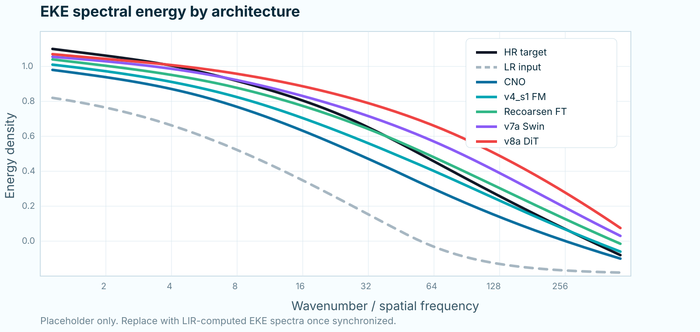

OceanLens
These pages document the experiments I ran to identify a reliable architecture for ocean super-resolution: from a deterministic CNO baseline to residual Flow Matching, fine-tuning strategies, transformers and diffusion-style alternatives.
Residual Decomposition
The project is organized around a Reynolds-like decomposition of the high-resolution ocean state:
xHR = mu(xLR) + runresolved
where the deterministic component is learned by a CNO and the residual component is modeled generatively.
High-resolution state
x_HR
Five surface variables on the GLORYS-like HR grid.
→
Deterministic branch: CNO
mu = x_LR + f_CNO(x_LR)
Learns the stable large-scale correction and produces the conditional mean field.
Generative branch: Flow Matching
r = FM(z, t, mu, x_LR)
Learns the unresolved residual that the deterministic branch cannot recover.
Data Construction
01
GLORYS12 HR: 1/12°
Daily surface fields from 1994–2003 are used for training and 2004 for validation. The variables are thetao, so, zos, uo, and vo.
coarsen
offline degraded product
02
Coarse product: 1.5°
The training pipeline reads the already degraded 1.5° product from disk. This is the coarse ocean state before any HR-grid alignment.
interpolate
PyTorch nearest
03
LR input: 1/4° grid
The 1.5° field is aligned with the 1/4° tensors using torch.nn.functional.interpolate(mode="nearest"). This gives the model a coarse, HR-shaped condition.
learn
04
Learning targets: HR grid
CNO learns HR - LR. Flow Matching learns HR - mu, where mu = LR + CNO(LR).
Training Logic
CNO baseline
LCNO = || fCNO(xLR) - (xHR - xLR) ||22
The CNO is the deterministic baseline. Its output is added to LR to form:
mu = xLR + fCNO(xLR)
Flow Matching residual
x1 = xHR - mu ; x0 ~ N(0, I)
FM learns a velocity field along the path from noise to residual:
xt = (1 - t)x0 + tx1 ; v* = x1 - x0
Version Timeline
Architecture Intercomparison
This comparison is only for models where the training recipe or backbone changed. The EKE plot is a placeholder until the final LIR figure is exported.

Inference Experiments
Inference has two stages. First, CNO gives a deterministic estimate:
mu = xLR + fCNO(xLR)
Then FM samples the residual by integrating a learned velocity field from noise to the residual space:
dxt/dt = vFM(xt, t, mu, xLR) ; x̂HR = mu + xt=1